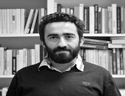

Kadromuz
Profesör Ali Balcı

Ali Balcı lisans derecesini 2002 yılında Uludağ Üniversitesinde tamamladıktan sonra Sakarya Üniversitesinde Uluslararası İlişkiler Bölümünde sırasıyla 2004 ve 2010 yıllarında yüksek lisans ve doktorasını bitirmiştir. 2011-2012 döneminde The University of Manchester'da (İngiltere) 2015-2016 döneminde de Columbia University'de (ABD) doktora sonrası araştırmalarda bulunan Balcı, Sakarya Üniversitesi Uluslararası İlişkiler Bölümünde görev yapmaktadır. Balcı lisans düzeyinde Türkiye Dış Politikası ve Uluslararası İlişkilere Giriş derslerinin yanı sıra lisansüstü düzeyde Postkolonyal Çalışmalar ve Postyapısalcılık ve Türk Dış Politikası gibi dersler vermektedir.
Kitaplar
- Birleşmiş Milletler Güvenlik Konseyi: Eleştirel Bir Giriş, (İstanbul: İstanbul Bilgi Üniversitesi Yayınları, 2022)
- The PKK-Kurdistan Workers' Party's Regional Politics: During and After the Cold War, (New York: Palgrave Macmillan, 2017)
- Dış Politikada Hesaplaşmak: AK Parti, Ordu ve Kemalizm, (İstanbul: Etkileşim Yayınları, 2015)
- Şaban Kardaş ve Ali Balcı (Der.), Uluslararası İlişkilere Giriş: Tarih, Teori, Kavram ve Uygulamalar, (İstanbul: Küre Yayınları, 2014)
- Türkiye Dış Politikası: İlkeler, Aktörler, Uygulamalar, (İstanbul: Etkileşim Yayınları, 2013)
- Türkiye'de Militarist Devlet Söylemi 1960-1983, (Ankara: Kadim Yayınları, 2011)
Hakemli Dergilerde Yayınlanan Makaleler
- "Do Gladiators Fight for Their Masters? Voting Behavior of the US-promoted UNSC Members in the Early Cold War", PS: Political Science & Politics, 2022, Doi: 10.1017/S1049096522001019
- "Algeria in Declining Ottoman Hierarchy: Why Algiers Remained Loyal to the Falling Patron?", Cambridge Review of International Affairs, 35(3), 2022, 375-393 Doi: 10.1080/09557571.2020.1795082
- "Controlling International Institutions: How the US Engineered UNSC non-Permanent Members in the Early Cold War", Global Policy, 13(2), May 2022, 259-270, Doi: 10.1111/1758 5899.13039
- Balcı, Ali and Emel Akçalı, "Enjoy Your New Region! The US Strategy of Shifting Turkey's Caucus in the UN Security Council in 1953", Geopolitics, 2022, 10.1080/14650045.2021.1969918
- "Bringing the Ottoman Order back into IR: A Distinct International Order or Part of an Islamic International Society?", International Studies Review, 23(4), 2021, 2090–2107, Doi: 10.1093/isr/viab031
- Balcı, Ali, Tuncay Kardaş, İsmail Ediz, ve Yıldırım Turan, "War Decision and Neoclassical Realism: The Entry of the Ottoman Empire into the First World War", War in History, 27(4) 2020: 643–669, Doi: 10.1177/0968344518789707
- Tuncay Kardaş and Ali Balcı, "Inter-societal Security Trilemma in Turkey: Understanding the Failure of the 2009 Kurdish Opening", Turkish Studies, 2016, 17(1): 155-180
- "The Kurdish Movement's EU Policy in Turkey: An Analysis of a Dissident Ethnic Bloc's Foreign Policy", Ethnicities, 2015, 15(1), ss. 72-91
- "Foreign Policy as Politicking in the Sarikiz Coup Plot: Cyprus between the Coup Plotters and the AKP", Middle East Critique, 21(2), 2012, ss. 157-170
- Ali Balcı and Tuncay Kardas, "The Changing Dynamics of Turkeys Relations with Israel: An Analysis of 'Securitization", Insight Turkey, April-June 2012, 14(2), ss. 99-120
- "Dış Politika: Yeni Bir Kavramsallaştırma Bağlamında Egemenlik Mitinin Analizi", Uluslararası İlişkiler, 7(28), Kış 2011
- "A Trajectory of Competing Narratives: Turkish Media Debates Ergenekon", Mediterranean Quarterly, Volume: 21, No: 1, Winter 2010, ss. 76-100
- Ali Balcı and Nebi Mis, "Turkeys Role in the 'Alliance of Civilizations: A New Perspective in Turkish Foreign Policy?", Turkish Studies, 9(3), September 2008, ss. 387-406
Kitap Bölümleri
- "Al-Ghazālī, Ibn al-Arabī and Global IR: A Sufi Re-reading of Knowledge-Power Nexus", Deepshikha Shahi (Editor), Sufism: A Theoretical Intervention in Global International Relations, London: Rowman & Littlefield, 2020, 23-40
- "Stratejik Derinlik'te Kemalizm ile Hesaplaşmak", Talha Köse, Ahmet Okumuş ve Burhanettin Duran (der.), Stratejik Zihniyet: Kuramdan Eyleme Ahmet Davutoğlu ve Stratejik Derinlik, (İstanbul: Küre Yayınları, 2014): 225-239.
- Kemal İnat ve Ali Balcı, "Dış Politika: Teorik Perspektifler", Uluslararası Politikayı Anlamak: Ulus-devletten Küreselleşmeye, ed. Zeynep Dağı, Alfa Yayınları, İstanbul: Şubat 2007, ss. 212-287
- "1990 Sonrası Türk Dış Politikası Üzerine Bazı Notlar: Avrupa Birliği ve Kıbrıs Örneği", Türkiye'nin Değişen Dış Politikası, Cüneyt Yenigün ve Ertan Efegil, (İstanbul: Nobel Yayınları, 2010): 87-99.
Kitap Değerlendirmeleri
- "The Mobilization of Political Islam in Turkey", British Journal of Middle Eastern Studies, Volume 40, Issue 2, 2013, pp. 205-207
- "The Ties of Religion and Political Economy: Review of Secularism and Muslim Democracy in Turkey", Middle East Critique, Volume: 19, Issue: 2, 2010, pp. 173-176
Analizler
- "Sömürgeci Feminizm: Ortadoğu'da 'Kurtarılacak' Kadın Öznenin İnşası", Ortadoğu Analiz, Ocak-Şubat 2017, 9(78): 80-81.
- "Ortadoğu'da Yeni Sömürgeci Pratikler: Arkeoloji, Bilgi ve İktidar", Ortadoğu Analiz, Temmuz-Ağustos 2014, 6(33): 75-77.
Bildiriler
- Talha İsmail Duman ve Ali Balci, "Muslim Solidarity in the Elections of Rotating Members to the Security Council", 26th IPSA World Congress of Political Science, 10-15 July 2021, The WC2021 Virtual Platform
- "İnsan Haklarını Hegemonyanın Hizmetine Koşmak İnsan Hakları Örgütleri Ne İşe Yarar", VIII. Uludağ Uluslararası İlişkiler Kongresi, Bursa: Uludağ Üniversitesi, 28-29 Kasım 2016
- "The Kurdish Movements Policy towards the USA: An Understanding of a Dissident Power Block's Foreign Policy in Turkey", Contemporary Turkish Studies at a Glance - Topics, Institutions and Future Perspectives, October 13&14, 2012, Istanbul Bilgi University, SantralIstanbul Campus, Turkey
- "Securitization and Foreign Policy: Cyprus between the Coup Plotters and the JDP", Third Global International Studies Conference, 17-20 August 2011, University of Porto, Portugal